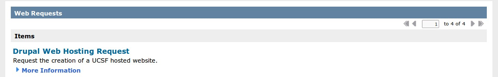
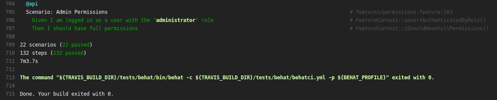
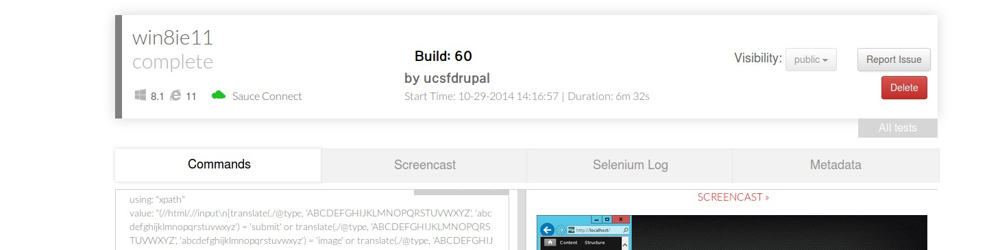

We do Drupal hosting

- BYOD (or not)
- Drupal 7 multisite (~410 sites)
- Acquia Cloud
StarterKit
- Default installation profile
- 47 contrib, 8 custom modules
- 1 custom base theme, 2 subthemes
- Responsive
- UCSF Branding/Identity
- Webedit
- Media module integration
- ~350 implementations
Step 0: Preparations
- Separate repos for custom themes/modules/profile
- GitHub
- Push-button build (
drush make)
Step 1: Behat Tests
What to test
- Common page elements
- Roles/Permissions
- Custom content types
- Taxonomy, Menus, etc
How to test
- Behat + Drupal Behat Extension
- Drupal API driver
- Selenium webdriver + Firefox
Step 2: Continuous Integration

- Travis CI
- Build and test automation on each commit
- Free service for Open Source projects
- Example
Step 3: Multi-browser testing

- SauceLabs
- IE7-11, Chrome, Safari, Firefox
- Run all tests on all browsers
- Free service for Open Source projects
- Example
Challenges
- "But, what do we test?"
- Build failures
- Community buy-in/adoption
Contact us
- stefan.topfstedt@ucsf.edu
- webservices@ucsf.edu
/